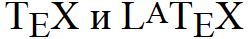

vertical-align
Выравнивает элемент по вертикали относительно своего родителя, окружающего текста или ячейки таблицы.
Краткая информация
| Значение по умолчанию | baseline |
|---|---|
| Наследуется | Нет |
| Применяется | К строчным элементам или ячейкам таблицы |
Синтаксис
vertical-align: baseline|bottom|middle|sub|super|text-bottom|text-top|top|
<размер> | <проценты>Значения
- baseline
- Выравнивает базовую линию текущего элемента по базовой линии родителя. Если родительский элемент не имеет базовой линии, то за нее принимается нижняя граница элемента.
- bottom
- Выравнивает основание текущего элемента по нижней части элемента строки, расположенного ниже всех.
- middle
- Выравнивание средней точки элемента по базовой линии родителя плюс половина высоты родительского элемента.
- sub
- Элемент изображается как подстрочный, в виде нижнего индекса. Размер шрифта при этом не меняется.
- super
- Элемент изображается как надстрочный, в виде верхнего индекса. Размер шрифта остается прежним.
- text-bottom
- Нижняя граница элемента выравнивается по самому нижнему краю текущей строки.
- text-top
- Верхняя граница элемента выравнивается по самому высокому текстовому элементу текущей строки.
- top
- Выравнивание верхнего края элемента по верху самого высокого элемента строки.
В качестве значения также можно использовать проценты, пиксели или другие доступные единицы. Положительное число смещает элемент вверх относительно базовой линии, в то время как отрицательное число опускает его вниз. При использовании процентов, отсчёт ведётся от значения свойства line-height, при этом 0% аналогично значению baseline.
Для выравнивания по вертикали в ячейках таблицы применяются следующие значения.
- baseline
- Выравнивает базовую линию ячейки с базовой линией первой текстовой строки или другого вложенного элемента.
- bottom
- Выравнивает по нижнему краю ячейки.
- middle
- Выравнивает по середине ячейки.
- top
- Выравнивает содержимое ячейки по ее верхнему краю.
Пример
<!DOCTYPE html>
<html>
<head>
<meta charset="utf-8">
<title>vertical-align</title>
<style>
.tex { font-size: 2rem; }
.tex sub {
vertical-align: sub;
font-size: 1.8rem;
}
.tex sup {
vertical-align: 5px;
font-size: 1.6rem;
}
</style>
</head>
<body>
<div class="tex">
T<sub>E</sub>X и L<sup>A</sup>T<sub>E</sub>X
</div>
</body>
</html>Результат данного примера показан на рис. 1.

Рис. 1. Применение свойства vertical-align
Объектная модель
Объект.style.verticalAlign
Спецификация
| Спецификация | Статус |
|---|---|
| CSS Transitions | Рабочий проект |
| CSS Level 2 (Revision 1) | Рекомендация |
| CSS Level 1 | Рекомендация |
Браузеры
| Internet Explorer | Chrome | Opera | Safari | Firefox |
| 4 | 1 | 4 | 1 | 1 |
| Android | Firefox Mobile | Opera Mobile | Safari Mobile |
| 1 | 1 | 4 | 1 |